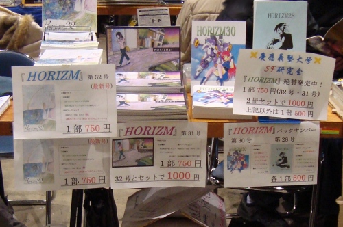

2008年12月の28日から30日にかけて、コミックマーケット75が開催された。当SF研もこのいわゆる「冬コミ」に出店したので、その参加報告を以下に記す。
朝まだ早い時刻に私達SF研の3人は大量のHORIZMを抱えて恵比寿駅に集合した。100ページの文庫本が大体50gなので、大体HORIZM32は一冊200gといったところだろう。確かそれを70冊以上持っていたので、14kg以上の荷物を背負ってたことになる。冬コミの名の通り、開催日は冬のまっただ中で、HORIZMが大量に入った鞄を持つ手が半ば凍って硬直していたのを覚えている。
東京ビックサイトについて最初に驚いたのは、会場前の行列の長さである。延々と人が縦に並んでいるという光景はそうそう見れるものではない。あの行列が数分でできるということはまずありえないと思うので、彼らは少なくとも数時間、すなわち夜も明けきらないうちからそこに並んでいた事になる。気温が5度を切るような早朝に、何時間も野外で待っていられる忍耐力には素直に感服する。
しかし、素朴な疑問なのだが、寒い中待たずとも、行列が消える午後あたりに入ってはダメなのだろうか？
会場に入ると、そこには椅子と机がぎっしり並べられていて、既に多くの人が自らに割り当てられた椅子2つ分のスペースを小店舗に築き上げていた。この会場の光景はとても印象的なものであった。
要するに、コミケは現代社会の巨大な市場とは異質な構造を持つ「バザール」なのだ。何が異質かといわれれば、例えば、コミケの出店者は小規模で柔軟な自営業者ばかりであり、ゆえに、暗示を擦り込むテレビCMや、金をかけた口コミ戦略といった小手先の戦法で競合者を圧倒することもできず、需給関係はよりダイレクトに各人の売り上げを直撃する。こういった種々の特質から浮かびあがるのは、小さな種が多数競い合っているというミニ生態系だ。それも、無数の構成単位が成功と失敗を繰り返しながら試行錯誤し、需要の変化という外圧に適応していく総体的営み、と表現してしまうのは問題かもしれないが。まあいずれにせよ、どこか会場全体を見渡せる場所があったら、この会場の動きを眺めて一日過ごしていただろうと思う。
私達は以下の様にブースを作り上げ、販売を行った。

今回の販売結果は次のように総括できる。すなわち、「生態系は厳しい。」
御来場いただき、まことにありがとうございました。